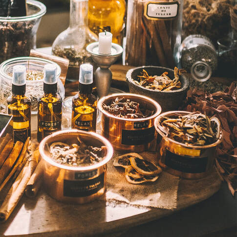

ODOR / 蝶漾香韻
剎那
與永恆
我們總是對於剎那間會消失的，抱持一種特有的感情，想要留住也害怕失去，也之所以會更珍惜，而花便是古時詩人寄情與此的典型代表，它可豔麗、可清新、可哀傷、可短暫，一如我們所要表達的氣味，而蝶之守護也讓我們記住也留住瞬間的永恆。
探索產品 ↗
ODOR / 01
01 / BRAND



KEYNOTE
沉香
CORE VALUE
合香與調香

WOODCRAFT
木工工藝
開闔方式：三角形LOGO鈕扣右推打開，左推闔上。
THE COLLECTION